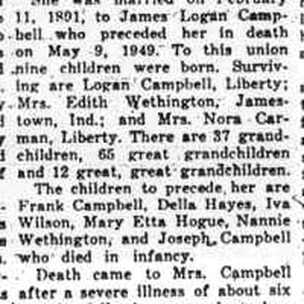
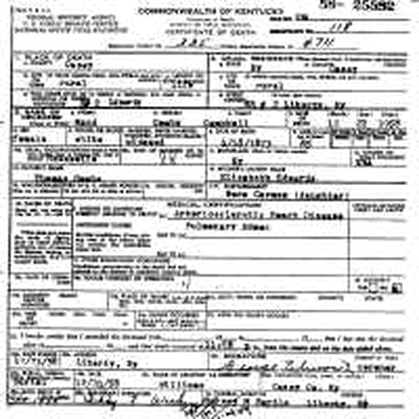
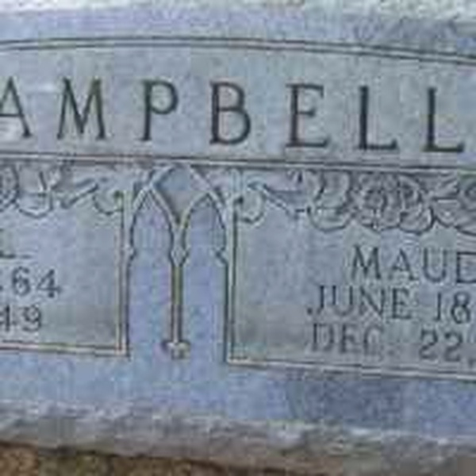
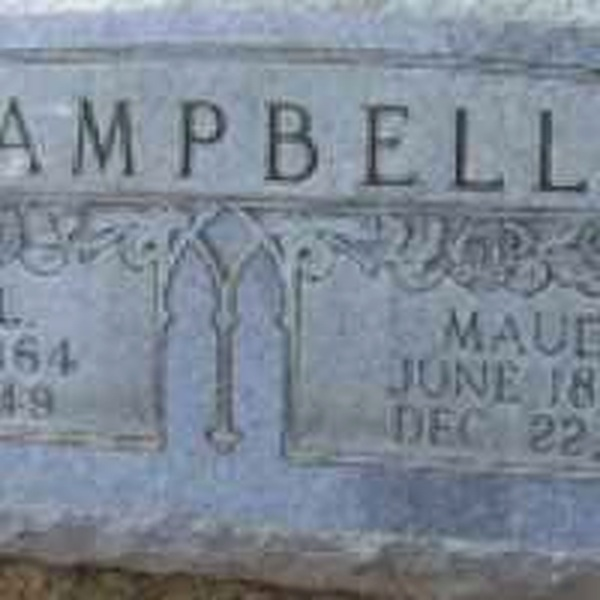
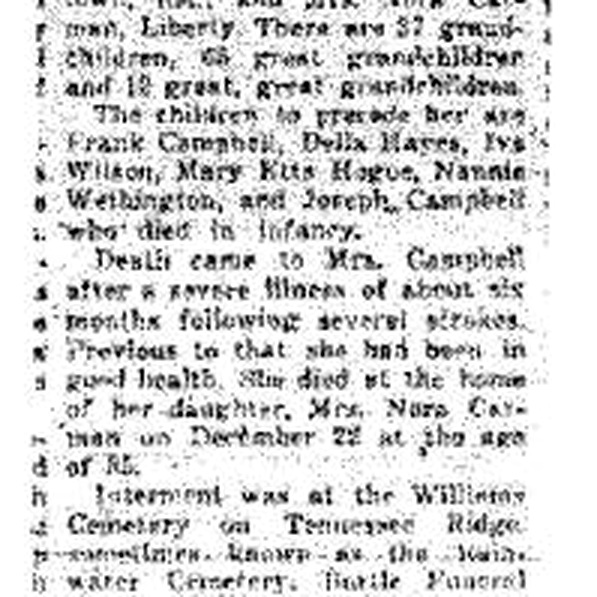
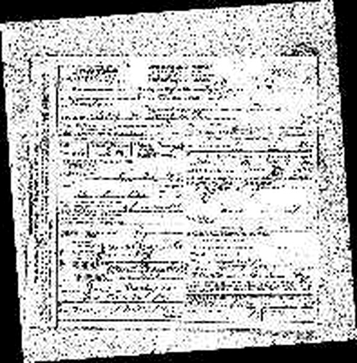
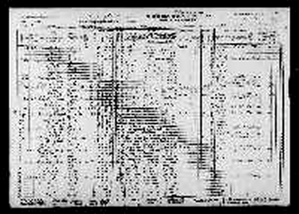

Maude Allen Combs
18 June 1873 – 22 December 1958
Quick Facts
Immediate Family
Spouses
- James Logan Campbell (married 11 February 1891)
Children
- Iva M. Campbell (1892–1958)
- Della Campbell (1893–1941)
- Logan Ira Campbell (1897–1970)
- Franklin Filmore Campbell (1899–1920)
- Mary Etta Campbell (1902–1957)
- Nanie Bet Campbell (1905–1936)
- Edith Carrell Campbell (1908–1993)
- Nora Lizabeth Campbell (1911–2005)
- Joseph Campbell (1915–1915)
Siblings
- Henry Clay Edwards
- Mattie Combs Wethington
- Unknown
Family Relationship Notes
The FamilySearch profile names Thomas C. Combs and Elizabeth Williams as Maude’s parents. Her Find a Grave memorial instead names Elizabeth (Edward) Edwards Combs; the available material does not reconcile these forms. The family cards preserve the name variation rather than assuming a maiden/married-name explanation.
The FamilySearch profile reports three siblings but exposes only Henry Clay Edwards and Mattie Combs Wethington in the available excerpt. One sibling remains unidentified and is not guessed.
The Find a Grave memorial field lists Raney Cemetery, while the attached Casey County News funeral clipping reports Williams Cemetery on Tennessee Ridge/Rainwater Cemetery. The burial location remains unresolved pending cemetery and original funeral/death record review.
The published FamilySearch profiles list nine children and the 1891 marriage to James Logan Campbell. These remain compiled-profile claims pending direct review of original marriage, census, birth, and death records.
New Generation VIII profiles link the names already shown on Maude’s FamilySearch and Find a Grave family entries. FamilySearch calls her mother Elizabeth Williams; Find a Grave calls her Elizabeth Edward Edwards Combs; the Casey County Combs family history uses Elizabeth Edwards Williams. The working display name preserves those variants. A 1870 Indiana marriage-license index for Thomas Combs and Elizabeth Williams conflicts chronologically with the reported 1885 Casey County marriage; it is not yet proved that both entries represent this couple.
On Family Tree Sites
Couple Folder
Open Gen VII couple folder: James Logan Campbell × Maude Allen Combs for records, photos, notes and stories.
Life Timeline
18 June 1873 · age 0
Reported born in Casey County, Kentucky, according to her FamilySearch profile
11 February 1891 · age 17
Married James Logan Campbell in Liberty, Casey County, Kentucky
1940 · age 66
Reported in Cincinnati, Hamilton County, Ohio, in the FamilySearch-cited census entry
1950 · age 76
Reported in Dunnville, Casey County, Kentucky, in the FamilySearch-cited census entry
22 December 1958 · age 85
Died in Liberty, Casey County, Kentucky, according to her FamilySearch profile; burial location remains conflicting
Life Story
Maude Allen Combs was born in Casey County, Kentucky, in 1873, according to her FamilySearch compiled profile. She married James Logan Campbell in Liberty on 11 February 1891. The couple’s published profiles list nine children and place Maude in Cincinnati in 1940 and Dunnville in 1950. She died in Liberty, Casey County, in 1958. Her profile lists Thomas C. Combs and Elizabeth Williams as her parents. These details are compiled-tree evidence pending inspection of the original records.
Photo Gallery









Sources and Evidence
- FamilySearch, Maude Allen Combs, LJJX-TQM: published profile gives birth 18 June 1873 in Casey County; parents Thomas C. Combs and Elizabeth Williams; marriage to James Logan Campbell on 11 February 1891 in Liberty; nine children; residence in Cincinnati in 1940 and Dunnville in 1950; death 22 December 1958 in Liberty. The page lists 33 sources, including 1930 census, Kentucky marriages and Kentucky death records.
- FamilySearch, James Logan Campbell, 27VG-TF8: spouse/parent profile independently lists Maude and the same nine children.
- FamilySearch profile photo thumbnail: shared Campbell marker image associated with James and Maude’s profiles. This is a related marker image, not a primary identity record.
- Find a Grave, Maude Allen Combs, photo page — cemetery-marker image and attached newspaper/death-record photographs, with contributor/date captions. User-contributed memorial and images; original records/clippings not inspected in this pass.
- Find a Grave, Nannie Bet Campbell Wethington, Memorial 18113071 — attached memorial transcript identifies her father as J. L. Campbell and mother as Maud Combs; family links name James Logan Campbell and Maud Allen Combs Campbell as parents. User-contributed memorial transcription, not an inspected birth certificate.
- Thomas C Combs, FamilySearch profile LVYV-RN5 — profile or memorial evidence inspected for the parent links; compiled or contributor-maintained, not a substitute for an original parent-child record.
- Elizabeth Williams, FamilySearch profile G8H2-RN4 — profile or memorial evidence inspected for the parent links; compiled or contributor-maintained, not a substitute for an original parent-child record.
- Elizabeth Edwards Combs, Find a Grave memorial 18113047, including 28 May 1918 Casey County News clipping — profile or memorial evidence inspected for the parent links; compiled or contributor-maintained, not a substitute for an original parent-child record.

Research Notes and Open Questions
- Vital dates, marriage details, residence, and parent/child links are from FamilySearch published family profiles, which aggregate sources but are not themselves original records.
- The shared marker photograph is an image shown on both FamilySearch profiles. Its small thumbnail permits only limited reading; do not independently transcribe illegible dates or imply it proves the relationship by itself.
- Seek original Casey County marriage records, census schedules, death records and obituaries to document the family links and resolve name/date variants.
- Maude’s FamilySearch profile names mother Elizabeth Williams; her Find a Grave memorial names Elizabeth (Edward) Edwards Combs. These may reflect maiden/married naming or a source mismatch, but are not reconciled in this pass.
DNA
No DNA matches linked yet.
Family Notes
No separate family-notes link is listed.
Profile created 20 November 2026. Family links are supported by published FamilySearch profiles; original records remain to be inspected.